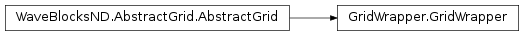

GridWrapper¶
About the GridWrapper class¶
The WaveBlocks Project
@author: R. Bourquin @copyright: Copyright (C) 2010, 2011, 2012, 2013, 2014, 2015, 2016 R. Bourquin @license: Modified BSD License
Inheritance diagram¶
Class documentation¶
-
class
WaveBlocksND.GridWrapper(anarray)[source]¶ This class constructs a thin layer around an
ndarrayand wraps it asGridsubclass for API compatibility. The array must have a shape of with
with  the overall number of nodes.
the overall number of nodes.-
get_dimension()¶ Return the dimension
 of the grid.
of the grid.
-
get_extensions(axes=None)[source]¶ Returns the extensions (length of the edges) of the bounding box.
Parameters: axes (A single integer or a list of integers. If set to None(default) we return the extensions for all axes.) – The axes for which we want to get the extensions.Returns: A list of  values.
values.
-
get_limits(axes=None)[source]¶ Returns the limits of the bounding box.
Parameters: axes (A single integer or a list of integers. If set to None(default) we return the limits for all axes.) – The axes for which we want to get the limits.Returns: A list of  ndarrays.
ndarrays.
-
get_nodes(flat=True, split=False)[source]¶ Returns all grid nodes.
Parameters: - flat (Boolean, default is
True.) – Whether to return the grid with a hypercubic shape or a flat
shape or a flat
 shape. Note that the
hypercubic shape is not implemented!
shape. Note that the
hypercubic shape is not implemented! - split (Boolean, default is
False.) – Whether to return the different components, one for each dimension inside a single ndarray or a list with ndarrays, with one item per dimension.
Returns: Depends of the optional arguments.
- flat (Boolean, default is
-
 of the
number
of the
number  of grid nodes along each dimension
of grid nodes along each dimension
 specified.
specified.